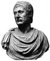

Hannibal (MÖ 247-183), 2. Kartaca Savaşı sırasında Roma lejyonları ile savaşmış Kartacalı bir generaldir. Sonunda başarısız da olsa, savaş fillerinin eşlik ettiği ordusunu karlı Alpler’den geçirerek İtalya’yı işgal etmeye çalışması ona günümüze kadar canlılığını koruyan büyük bir ün kazandırmıştır.

Hannibal’ın yenilgiye uğramasına rağmen askeri taktiklerdeki ustalığı onu antik dünyanın en tanınmış ve en korkulan kumandanları arasına sokmuştur. 2 bin yıl sonra bile Fransa ve İtalya’daki dağlarda yolculuk sırasında kayalara kazınmış ismine rastlayanlar olmuştur.
Hannibal, 1. Kartaca Savaşı sırasında Roma tarafından yenilgiye uğratılan General Hamilcar Barca’nın oğludur. Babası oğlundan, henüz dokuz yaşındayken hayatını şehrin büyük düşmanlarına karşı savaşmaya adayacağına dair Tanrı Baal’e yemin etmesini istemiştir (Hannibal “Baal’ın Zerafeti” anlamına gelmektedir).
Hannibal MÖ 221 yılında Kartaca ordularının komutanlığına geldi. İki yıl sonra istila hareketine başladı. Yirmi 5 bin askerden oluşan Kartaca güçlerinin binlerce atı ve birkaç düzine fili bulunuyordu. Kesin rotası bilinmemekle birlikte en son Kuzey İtalya’daki Torino Şehri’ne kadar ulaştığı bilinmektedir. Askerlerinin yarısından fazlasının ve fillerinin büyük çoğunluğunun bu yolculuk sırasında öldüğü tahmin edilmektedir. Sonraki 17 yıl boyunca Hannibal, Roma’yla kendi arka bahçesinde savaştı. Düşmanlarının karşısında hiç savaş kaybetmemiş ama Romalılar Kartaca’ya saldırınca geri dönmek zorunda kalmıştır. MÖ 202 yılında Zama Savaşı’nda yenilgiye uğrayan Hannibal, Tyre şehrine sürgüne gitmiş ve Kartaca’ya asla geri dönmemiştir.
Ne var ki Hannibal’ın Roma’yla olan savaşı bitmemişti. Yunan Seleucid İmparatorluğu’na askeri danışman olmuş ve Roma müttefiklerini yenen Bithynian Donanması’nı kumanda etmiştir. Romalılar Hannibal’ı yakalama kararı vermişler ve Bithynian kralına onu teslim etmesi için baskı yapmışlardır. Hannibal ise Romalılar onu yakalamadan önce intihar etmiştir.
2. Kartaca Savaşı’nın Roma zaferi ile sonuçlanması tarihte önemli bir dönüm noktasıdır. En korkunç düşmanının yenilgisiyle Roma, Akdeniz dünyasındaki askeri üstünlüğünü kurmuştur. Bu konumunu yüzyıllar boyunca koruyacaktır.
Ek Bilgiler
1- Hannibal’ın adı İngiliz yazar Jonathan Swift (1667-1745) tarafından 1726 yılında yazılan klasik eser Güliver’in Seyahatleri’nde de geçmektedir.
2- Mark Twain’in (1835-1910) çocukluğunu geçirdiği Missouri’deki Hannibal şehri, adını Kartacalı komutandan almaktadır. Kasaba ve onun sakinleri, Twain’in en bilinen romanlarından biri olan 1885 tarihli Hucklebery Finn’in Maceraları’na ilham kaynağı olmuştur.
3- Kartaca, 3. Kartaca Savaşı (MÖ 149-146) ile kesin bir biçimde Roma tarafından yenilgiye uğratılmıştır. Kinci Roma askerleri şehrin etrafındaki tarlalara tuz dökerek onun bir daha gelişmemesini garantiye almak istemişlerdir. Tarihçilerin bu hikayeyle ilgili şüpheleri olsa da Kartaca’nın bir daha asla Akdeniz’deki Roma egemenliğini tehdit edemediği bilinen bir gerçektir.